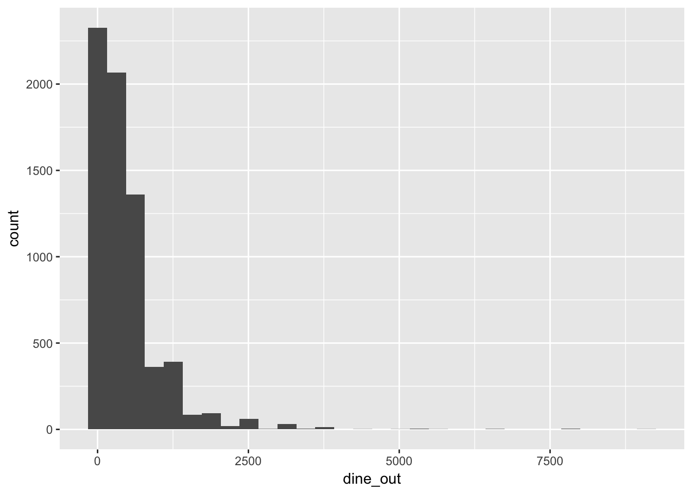
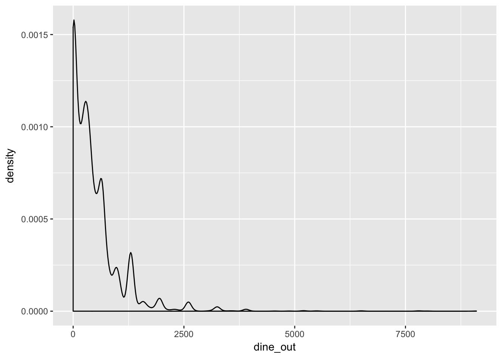
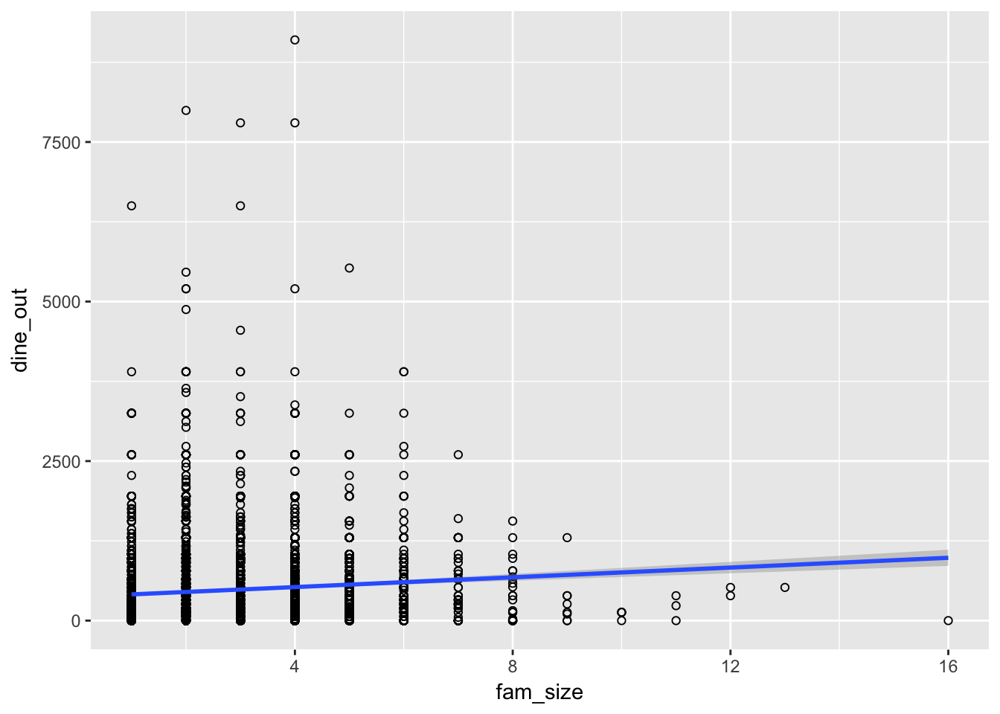
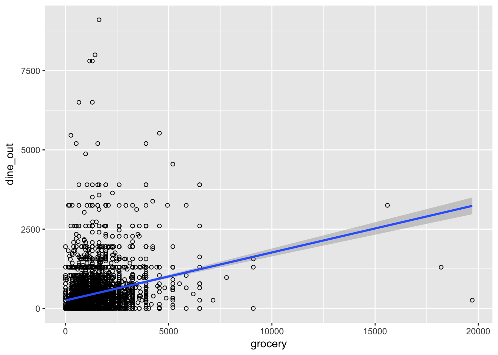
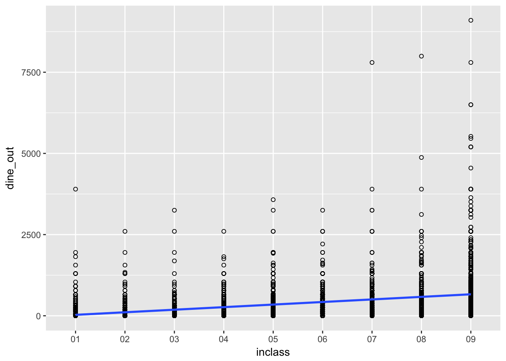

6 Using Regression for Prediction
6.1 Overview
So far, we’ve been using just the simple mean to make predictions. Today, we’ll continue using the simple mean to make predictions, but now in a complicated way. Before, when we calculated conditional means, we did so in certain “groupings” of variables. When we run linear regression, we no longer need to do so. Instead, linear regression allows us to calculate the conditional mean of the outcome at every value of the predictor. If the predictor takes on just a few values, then that’s the number of conditional means that will be calculated. If the predictor is continuous and takes on a large number of values, we’ll still be able to calculate the conditional mean at every one of those values.
We’re going to be working with expenditure data from the 2012 administration of the consumer expenditure survey. The first bit of code gets the libraries we need, the data we need, and opens up a codebook for the data.
6.2 Bivariate regression
Our first dependent variable will be dining out. Let’s take a look at that variable:
summary(cex$dine_out)## Min. 1st Qu. Median Mean 3rd Qu. Max.
## 0.0 65.0 325.0 468.1 650.0 9100.0gg<-ggplot(cex,aes(x=dine_out))
gg<-gg+geom_histogram()
gg## `stat_bin()` using `bins = 30`. Pick better value with `binwidth`.
gg<-ggplot(cex,aes(x=dine_out))
gg<-gg+geom_density()
gg
Because this variable is pretty non-normally distributed, we may want to think about transforming it. For now, let’s just work with it as-is. Let’s see if people with bigger families spend more on dining out more than those with smaller families. Before, we would have calculated the conditional mean at every level of family size, or in certain groupings of family size. With regression, we simply specify the relationship.
#Model 1: simple bivariate regression
mod1<-lm(dine_out~fam_size,data=cex) #outcome on left, predictor on right
summary(mod1)##
## Call:
## lm(formula = dine_out ~ fam_size, data = cex)
##
## Residuals:
## Min 1Q Median 3Q Max
## -984.2 -384.7 -150.7 162.8 8574.6
##
## Coefficients:
## Estimate Std. Error t value Pr(>|t|)
## (Intercept) 372.517 13.911 26.78 < 2e-16 ***
## fam_size 38.230 4.767 8.02 1.24e-15 ***
## ---
## Signif. codes: 0 '***' 0.001 '**' 0.01 '*' 0.05 '.' 0.1 ' ' 1
##
## Residual standard error: 593 on 6822 degrees of freedom
## Multiple R-squared: 0.00934, Adjusted R-squared: 0.009195
## F-statistic: 64.32 on 1 and 6822 DF, p-value: 1.237e-15g1<-ggplot(cex, aes(x=fam_size,y=dine_out))+ #specify data and x and y
geom_point(shape=1)+ #specify points
geom_smooth(method=lm) #ask for lm line
g1
pred1<-predict(mod1) #predict using data in memory
rmse1<-rmse(cex$dine_out-pred1); rmse## function(error)
## {
## sqrt(mean(error^2))
## }What this shows is that as family size increases, the amount spent on dining out increases. For every additional family member, an additional 38.2303747 is predicted to be spent on dining out. The rmse of 592.9362808 gives us a sense of how wrong the model tends to be when using just this one predictor.
Quick Exercise Run a regression using a different predictor. Calculate rmse and see if you can beat my score.
6.3 Multiple Regression.
Okay, so we can see that this is somewhat predictive, but we can do better. Let’s add in a second variable: whether or not the family is below the poverty line.
#Part 2: Multiple regression
mod2<-lm(dine_out~fam_size+
pov_cym, #can only take on two values
data=cex)
summary(mod2) ##
## Call:
## lm(formula = dine_out ~ fam_size + pov_cym, data = cex)
##
## Residuals:
## Min 1Q Median 3Q Max
## -1005.7 -332.1 -144.6 151.6 8529.2
##
## Coefficients:
## Estimate Std. Error t value Pr(>|t|)
## (Intercept) 114.665 21.129 5.427 5.93e-08 ***
## fam_size 36.239 4.682 7.740 1.14e-14 ***
## pov_cymNot in Poverty 311.219 19.458 15.994 < 2e-16 ***
## ---
## Signif. codes: 0 '***' 0.001 '**' 0.01 '*' 0.05 '.' 0.1 ' ' 1
##
## Residual standard error: 582.2 on 6821 degrees of freedom
## Multiple R-squared: 0.04515, Adjusted R-squared: 0.04487
## F-statistic: 161.3 on 2 and 6821 DF, p-value: < 2.2e-16pred2<-predict(mod2)
rmse(cex$dine_out-pred2)## [1] 582.1207So, those who are in poverty spend less on dining out. Alert the media!
Quick Exercise Add poverty to your model from above and see what difference it makes. How is your RMSE?
Maybe it’s the case that those who spend more on groceries dine out less. Let’s find out:
#Model 3: predicting dining out using other variables and grocery spending
mod3<-lm(dine_out~
fam_size+
pov_cym+
grocery,
data=cex)
summary(mod3)##
## Call:
## lm(formula = dine_out ~ fam_size + pov_cym + grocery, data = cex)
##
## Residuals:
## Min 1Q Median 3Q Max
## -2785.3 -324.8 -125.3 136.9 8570.7
##
## Coefficients:
## Estimate Std. Error t value Pr(>|t|)
## (Intercept) 62.114475 20.949377 2.965 0.00304 **
## fam_size -4.026819 5.184420 -0.777 0.43735
## pov_cymNot in Poverty 257.868962 19.339246 13.334 < 2e-16 ***
## grocery 0.138693 0.008306 16.698 < 2e-16 ***
## ---
## Signif. codes: 0 '***' 0.001 '**' 0.01 '*' 0.05 '.' 0.1 ' ' 1
##
## Residual standard error: 570.7 on 6820 degrees of freedom
## Multiple R-squared: 0.08266, Adjusted R-squared: 0.08225
## F-statistic: 204.8 on 3 and 6820 DF, p-value: < 2.2e-16g2<-ggplot(cex, aes(x=grocery,y=dine_out))+
geom_point(shape=1)+
geom_smooth(method=lm)
g2
Hmm, what happened here?
Quick Exercise Use a subset of the cex data with reasonable bounds on both dining out and grocery expenditures. See if the results hold.
6.4 Transformations
The big issue as you can see with this data is that the outcome variable isn’t normally distributed: most people spend very little on dining out, while some people spend quite a lot. In situations like this, which are VERY common when dealing with monetary values, we want to take the natural log of the outcome variable. A natural log is the power by which we would have to raise \(e\), Euler’s constant, to be that value: \(e^{ln(x)}=x\), or \(ln(e^x)=x\).
Economists just basically take the natural log of everything that’s denominated in dollar terms, which you probably should do as well. You’ll notice in the equations below that I specify the log() of both dining out and grocery spending.
#Part 4: Working with transformations
mod4<-lm(log(dine_out+1)~ #log of dining out, plus one for zeros
+log(grocery+1)+ #log of groceries, plus one again
pov_cym+ #poverty
fam_size #family size
,data=cex)
summary(mod4)##
## Call:
## lm(formula = log(dine_out + 1) ~ +log(grocery + 1) + pov_cym +
## fam_size, data = cex)
##
## Residuals:
## Min 1Q Median 3Q Max
## -5.8373 -0.4087 0.9051 1.5967 7.1674
##
## Coefficients:
## Estimate Std. Error t value Pr(>|t|)
## (Intercept) 0.39857 0.22933 1.738 0.0823 .
## log(grocery + 1) 0.41893 0.03538 11.842 <2e-16 ***
## pov_cymNot in Poverty 1.57931 0.08572 18.425 <2e-16 ***
## fam_size 0.01008 0.02198 0.459 0.6464
## ---
## Signif. codes: 0 '***' 0.001 '**' 0.01 '*' 0.05 '.' 0.1 ' ' 1
##
## Residual standard error: 2.504 on 6820 degrees of freedom
## Multiple R-squared: 0.08598, Adjusted R-squared: 0.08558
## F-statistic: 213.8 on 3 and 6820 DF, p-value: < 2.2e-16pred4<-(predict(mod4))
exp(rmse(log(cex$dine_out+1)-pred4))## [1] 12.22413g4<-ggplot(cex, aes(x=grocery,y=exp(pred4),color=pov_cym))
g4<-g4+geom_point(shape=1)
g4
When calculating RMSE, I need to work with it in log format. The prediction command will give me back a prediction in log format as well. I take the difference between the two in log format, then exponentiate using the exp command, which means raising \(e\) to the power of \(x\), \(e^x\).
#Part 5: Adding income
mod5<-lm(log(dine_out+1)~
+log(grocery+1)+
pov_cym+
fam_size+
inclass
,data=cex)
summary(mod5)##
## Call:
## lm(formula = log(dine_out + 1) ~ +log(grocery + 1) + pov_cym +
## fam_size + inclass, data = cex)
##
## Residuals:
## Min 1Q Median 3Q Max
## -6.1979 -0.5699 0.7948 1.5897 6.0008
##
## Coefficients:
## Estimate Std. Error t value Pr(>|t|)
## (Intercept) 1.70238 0.25098 6.783 1.28e-11 ***
## log(grocery + 1) 0.29036 0.03497 8.303 < 2e-16 ***
## pov_cymNot in Poverty 0.37223 0.14906 2.497 0.012542 *
## fam_size -0.12712 0.02304 -5.518 3.56e-08 ***
## inclass02 -0.06889 0.20307 -0.339 0.734425
## inclass03 -0.57489 0.19705 -2.917 0.003540 **
## inclass04 -0.18314 0.21770 -0.841 0.400237
## inclass05 0.30874 0.21863 1.412 0.157961
## inclass06 0.80404 0.23002 3.496 0.000476 ***
## inclass07 0.83575 0.23631 3.537 0.000408 ***
## inclass08 1.14419 0.23107 4.952 7.53e-07 ***
## inclass09 1.97654 0.22740 8.692 < 2e-16 ***
## ---
## Signif. codes: 0 '***' 0.001 '**' 0.01 '*' 0.05 '.' 0.1 ' ' 1
##
## Residual standard error: 2.421 on 6812 degrees of freedom
## Multiple R-squared: 0.1468, Adjusted R-squared: 0.1455
## F-statistic: 106.6 on 11 and 6812 DF, p-value: < 2.2e-16pred5<-(predict(mod5))
exp(rmse(log(cex$dine_out+1)-pred5 ))## [1] 11.23037g5<-ggplot(cex, aes(x=inclass,y=dine_out,group=1))+
geom_point(shape=1)+
geom_smooth(method=lm)
g5